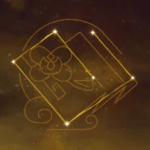

Una renombrada cantante de opera de Liyue que es experta tanto en la composición de obras como en el canto. Su estilo es unico, exquisito y delicado, como su propia persona.
Artefacto/s recomendados


Def% / Energia%

Def%

Def%
DEF% > Energia% > Prob. critica
Talentos

Pasivas
Constelacion
Armas Recomendadas


Personajes compatibles